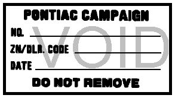
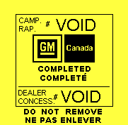

Go Home
Site Map
Go Home
Site Map
Finding Fiero Recall Data
As you may be aware, it has become increasingly difficult to verify that a recall has been completed and to have recall work performed. This document should help point you to the resources needed to verify recall status on you car.
Note: This article is ten+ years old. Recall Parts is no longer made and inventory is exhausted. So Don't expect to force GM to give you a Recall that is 20-25+ years old. Article is more of an Archive now...
What are the rules about recalls?
NHTSA has the Recall Process published at their web site. If you have further questions after reading this document then write or call NHTSA. Contact information is available in a number of areas on the NHTSA web site.
NHTSA Home
How long do recalls last?
Quoted from NHTSA:
Recalls involving tires are specifically limited in the Safety Act such that the owner has only three months from the date of notification to have the recall work accomplished. All other safety recalls are in effect for the life of the product.
Source:
http://www-odi.nhtsa.dot.gov/cars/problems/recalls/recallproblems.cfm
Underline added by The Ogre.
The dealer and/or GM are stonewalling...
Read this page at NHTSA. And see note above...
Recall ID Labels
United States Label
The following instructions regarding the label appear in all GM recall documents. All carmakers have a similar label. It is my understanding that this label is a NHTSA required part of recall work. On Fiero this label may appear in either the engine or the front compartment.

CAMPAIGN IDENTIFICATION LABEL
Each vehicle corrected in accordance with the instructions outlined in this Product Campaign Bulletin will require a "Campaign Identification Label." Each label provides a space to include the campaign number, the five digit dealer code of the dealer performing the campaign service, and the date the vehicle was campaigned. This information may be inserted with a typewriter or ballpoint pen. Install the label only on a clean, dry surface of the radiator baffle where it is readily visible. (Additional campaign labels are available on stationery order as Form XXXX-XXX).
Source: TSB 86-C-13, ENGINE SPLASH SHIELDS POTENTIAL INTERFERENCE WITH COOLANT HOSES
Canadian Label
Both GM Canada and the Canadian Government have different codes for the recalls. They may not recognize the recalls below or there may be additional ones. Sorry, I do not have recall contacts for you.

Recall ID label for Canada
Label Notes:
The voided label images above are not exact copies.
The U.S. ID label is a replica based on the poorly scanned image in the ALLdata document posted by Autozone. (I couln't find a good font to use so I made the original text readable and redrew all the rest.)
The Canadian ID label is a replica based on a photo in a forum thread. The original label in the photo is pretty chewed up.
Keep in mind there are other variations of the labels. These examples should give you an idea what you are looking for. Don't forget to check both the front and rear compartments for these labels.
Verified Fiero Recalls
The following table lists the GM and NHTSA number for known recalls on 84-88 Pontiac Fiero.
|
NHTSA # |
GM # | Years | Subject |
|---|---|---|---|
| 87V181000 | 84-C-15B | 84 Only | NON-COLLISION Engine Compartment Fires |
| 89V232000 | 88-C-23A | 84-88 | L4 Engine fire, Oil & Coolant leaks, etc. |
| 90V104000 | 88-C-24 | 85-88 | V6 Engine fire, Oil leaks, Similar to above. |
| 91V055000 | 86-C-16 | 84-86 | Brakes, Handbrake Problem, Manual Transmission. |
| ? | 86-C-13 | 85-86 | V6 Splash Shields may interfere with coolant lines. |
I can't find the last one in the NHTSA database
Note: The first two digits of the NHTSA number are the year the recall was issued and "V" means it is a Vehicle recall. The remaining digits are unique to each recall.
Both 87V181000 and 89V232000 apply to 84 Fiero. 87V181000 explains engine failure issues for 84 cars. 89V232000 expands on 87V181000 and adds the procedures for 85-88 cars. Officially, I believe 89V232000 supercedes 87V181000 but the older one explains what to look for in terms of possible block damage. Make sure you understand that one and use it as a guide to check any 84-86 blocks you plan to rebuild.
91V055000 looks like it applies to ALL 84-86 Fiero with manual transmission. There is no mention of this being a V6 only item.
(Some people in the forums indicated it might be V6 only.) Why it would only apply to manual tranny I don't know.
Maybe they figure manual tranny cars would use the hand brake more and that would wear out the parts.
(Edit this line to fix 86-C-28 to 86-C-16. 28 was for Camaro w/ same problem.)
Also See Brake Recall Notes
86-C-13 can be checked by anyone. Please don't raise hell with dealers and GM for this one. It's not worth the trouble for something this simple. If you are having one of the other recalls done then maybe you can get this one done at the same time. (90V104000 specifically states to do this work at the same time unless it was already done....)
Otherwise, just do the following:
- Check the coolant hoses where they pass through the splash shields in the wheel wells. GM says the left one is likely to be the worse of the two.
- Trim the shield as needed to prevent it rubbing the hoses.
- Replace the hoses if they are worn down to the cording.
Sources of Recall and/or TSB Info+
The following locations on the web can provide summaries and/or owner letters for Fiero recalls. (These links may open new windows.)
NHTSA Home
Fiero News Download has most recall doc's.
Michigan Fiero Club Home has E-Brake recall in Tech Tips.
ALLdata Home